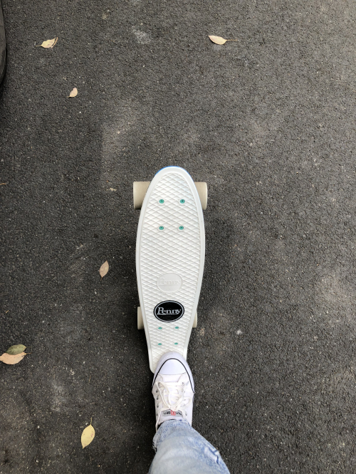
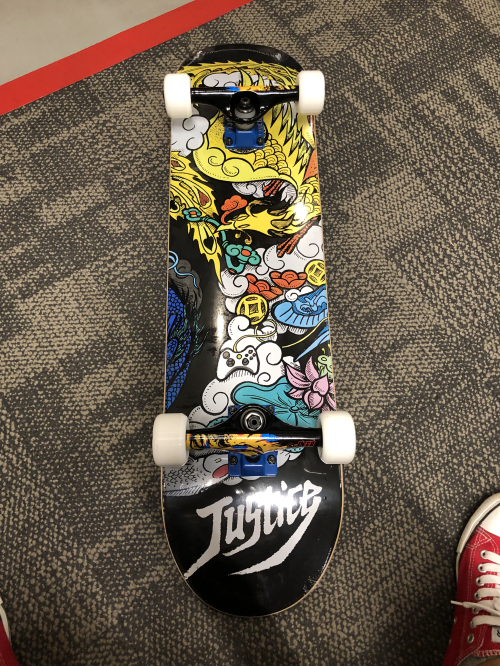

Skateboard
Table of Contents
Skateboard note.
Skateboard
上板
首先识别自己运动习惯，及识别自己是 Goofy 还是 Regular。这样可以减低滑板学习的入门难度。
什么是 Goofy，Regular？
在滑板或单板滑雪运动中，右脚在前的站姿称作 Goofy，左脚在前的站姿称为 Regular。
识别 Goofy，Regular 的方法？
单脚站立，判断自己的平衡性在哪种情况下更好，如果左脚站立时，平衡性好，那么你就是 Regular，反之则为 Goofy。
- 如果感觉不出来，可以试试单脚下蹲。
- 如果依然不行，可以试试单脚跳远。
- 如果还是无法断定，就抛个硬币吧
上板练习
前脚踏在滑板上靠前的位置，重心放在踏滑板的脚上，后脚蹬地助滑。
初学时，可以将注意力集中在前脚上，练习将重心放在前脚，后脚能做到跟随身体就可以了，等有了平衡感后，再练习后脚蹬地。
滑行
滑板有速度后，后脚放到滑板后面，保持身体重心不变，旋转前脚使前脚和滑板滑动方向垂直，这样身体的平衡性最好，可以保证稳定滑行。
- 可以先在草地上静止练习滑行时的两脚站位，熟悉平衡感后，再练习滑行中站位。
利用重心转弯
转弯时，控制重心向弯道方向偏移可以使滑板的滑轮向对应方向旋转，从而实现转弯。
移动中上板 下板
荡板
荡板可以增进在滑板上的平衡性。板上扭腰、鸭子步可以帮助掌握荡板技巧。
板上扭腰 在平地上，站滑板上，双脚分别放在滑板前后桥钉上，重心不断在左右脚切换。
鸭子步 在平地上，站在滑板上，像鸭子一样向前走。
https://m.idongde.com/c/13fAb56458bbD204.shtml
Skateboard 记录
XXX
很久之前看了一部电影 白日梦想家 , 其中一段主角的滑板速降很有自由感。
2019-3-30
在网上搜索滑板相关知识，了解滑板的分类、品牌。锁定购买 Penny Fish Skateboard。
2019-4-13
开始正式学习小鱼板，学前看一些基础教程。
练习上板，练习滑行, 利用重心转弯。
2019-4-14
练习移动中上下板，练习荡板。
2019-7-6
6 月比较忙碌，没怎么练习。荡板已经熟练掌握了，开始练习 ollie 了。
My Skateboard
2019-03-30
庆祝 2019 愚人节来一块滑板 O(∩_∩)O

2019-06-18
618 为响应国家扩大内需的号召，买一块双翘板
